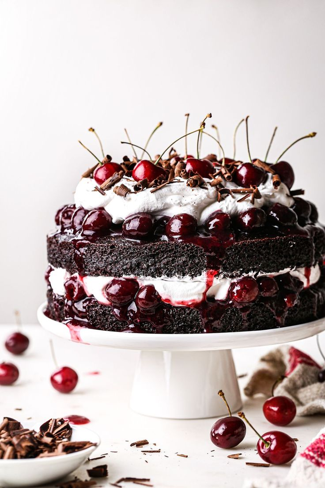

Forêt-noire

Ingrédients :
- Génoise :
- 200 g de sucre
- 6 oeufs
- 180 g de farine
- 60 g de cacao en poudre non sucré
- 1 c.a.c de levure chimique
- 1 pincée de sel
- Garniture et montage :
- 800 g de cerise dénoyautées et leurs jus
- 500 ml de créme fouettée
- 100 g de sucre glace
- 1 c.a.c d'extrait de vanille
- 100 g de copeaux de chocolat pour la dé
- Cerises entières pour la décoration
Étapes :
- Préchauffer le four a 180°C. Beurrez et farinez un moule à gateau de 26cm de diamètre.
- Dans un grand bol, battez les oeufs et le sucre jusqu'à ce que le mélange soit léger et mousseux. Tamisez la farine, le cacao, la levure et le sel, puis incorporez-les délicatement au mélange d'oeufs et de sucre.
- Versez la pâte dans le moule préparé et faites cuire au four pendant 30 min, ou jusqu'à ce qu'une lame de couteau inséré au centre du gâteau en ressorte propre. Laissez le gâteau refroidir complètement avant de la démouleret de le couper en trois couches horizontales égales.
- Pendant que la gâteau refroidit, préparez la crème fouettée en battant la crème, le sucre glace et l'extrait de vanille jusqu'à ce qu'elle forme des pics fermes.
- Imbibez légérement les couches de gâteau avec le jus des cerises.
- Placez la première couche de gâteau sur un plat, garnissez-la de crème fouettée te répartissezla moitié des cerises égouttées par-dessus. Répetez avec la deuxième couche de gâteau, la crème fouettée et les cerises restantes. Placez la dernière couche de gâteau sur le dessus et recouvrez la gâteau enntier de crème fouettée sur les cotés et le dessus.
- Décorez le gâteau avec le copeaux de chocolat sur les cotés et le dessus du gâteau. Ajoutez quelques cerises entières sur le dessus. Réfrigerez le gâteau pendant au moins 2 heures avant de le servir.
Vous cherchez une recette en particulier ?
Contactez-nous pour que nous l'ajoutions à notre répertoire